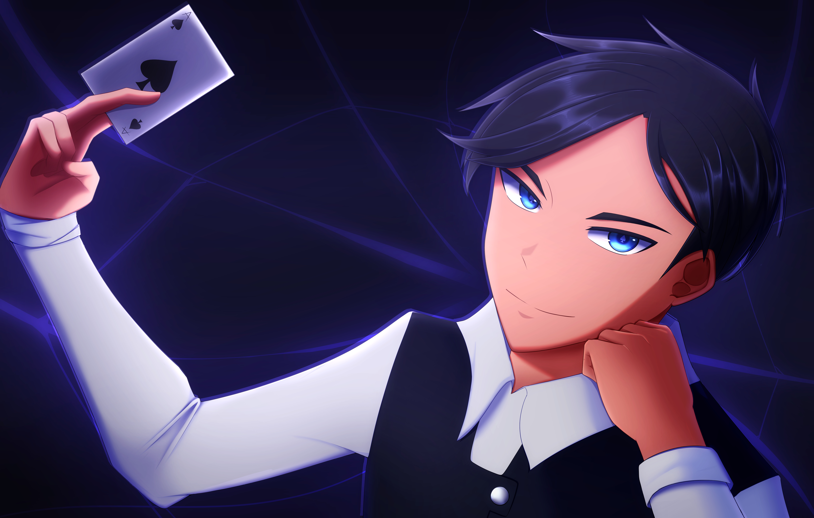

Jamar Burnett
About Me
I am a student at High Point University majoring in Game Design, with a minor in computer science. Throughout my time as a game design major, I've learned how to create games using my creative skills. In the year that I've been pursuing my minor in Computer Science, I have learned how to code and create simple programs in C++
My Interests
- Art: I've been drawing since 2015, and ever since it has become one of my passions and the main way to let my creativity flow. I create a lot of character designs that I hope to one day use for animations
- Games: I love to play nice relaxing games by myself, and chaotic, party games with my group of friends at night or with my childhood best friend.
- Learning languages: I've been learning languages since I have lived in Japan. Japanese is the 2nd language I learned along with Spanish, and Tagalog. I know more spanish than I do Japanese, and can't remember anything from Tagalog.
- Technology: Me and my childhood best friend love technology and bond over it. I love building tech, and seeing how it works. I built my very first PC in 2025.
- Music: I love different types of music, but I'll listen to anything that is good. My favorite genres include Rock, Trance, EDM, and VGM
- Cooking: I love to cook. It's a skill I learned from my own mother. I love cooking cuisines from different countries around the world, and sometimes creating my own recipes.

Top Three Category
Art:
- Huion Kamvas 16 (Gen 3)
- Pen
- iPad 10th Gen
My personal website.
What I want to learn in CSC1210
During my semester in CSC1210, I would like to learn how to create my own website for my art or any games that I create for my Game Design Major. I have always used external website builders to create my website, but I dislike having to pay certain websites to be able to have more art or videos up on a webpage. I believe it would be much more fulfilling and fun to work on.